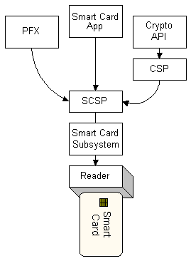

Other parts of the Microsoft Internet Security Framework use the smart card subsystem, as shown in the following illustration. (Because of U.S. export restrictions, a cryptographic service provider (CSP) that uses an SCSP to communicate cryptographic-related requests should sign and verify the SCSP.)

For more information on the role of the smart card subsystem in the Microsoft Internet Security Framework, see https://www.microsoft.com/whdc/device/input/smartcard/default.mspx.
Â
Â